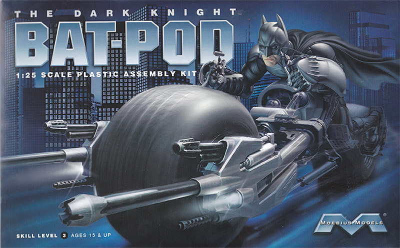
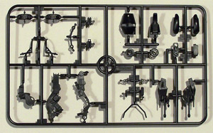
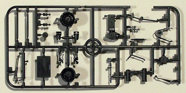
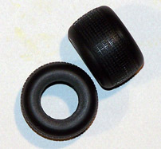

|

Moebius 1/25 Wayne Enterprises 'Batpod'

Kit #920 MSRP $19.99 $15.79 from Mega Hobby
Images and text Copyright © 2012 by Matt Swan
Developmental Background
During the Reagan years when military research and development funding was readily available to industry Wayne Enterprises Applied Science Division grabbed a share and designed a prototype bridging vehicle designated "Tumbler". The project never went beyond the first operational prototype and languished in a warehouse under tarp until the unexpected emergence of Bruce Wayne. Under the direction of Wayne, Lucius Fox, a past CEO of Wayne Enterprises and well educated in the fields of Biochemistry and Mechanical Engineering, made several modifications to the vehicle to create a stealthy urban interceptor. One design change Fox introduced was an escape pod should the vehicle suffer catastrophic damage or be required to self-destruct. Wayne's butler, Alfred Pennyworth referred to this escape vehicle once as a 'Batpod' and the name stuck.
Essentially the Batpod was a stripped down motorcycle type of vehicle that incorporated the front wheels of the Tumbler. The pod is powered by powered by a high-performance, water-cooled, single-cylinder engine - geared toward the lower end for faster acceleration. There are no exhaust pipes as the engine exhaust is routed through the hollow steel/aluminum/magnesium tubing used for the frame of the bike. The foot pegs are actually the engine radiator units. Steering is achieved via shoulder sensors coupled to hub steering units providing increased stability and an extreme level of maneuverability, additionally the Bat-Pod can physically lower and elongate itself giving the driver the ability to maneuver under low clearances.The central frame is gyro stabilized and will rotate to keep the driver upright during extreme maneuvers. The pod is also armed with twin forward facing .50-cal. machine guns and 40 mm cannons built directly into its framework. Finally the pod features pneumatically armed grappling hooks.
The Batpod did have one weakness however. While the Tumbler features advanced security systems preventing casual criminal penetration the escape pod only carried rudimentary measures. At some point in time this allowed Selina Kyle, a.k.a Catwoman, to steal a Batpod. She has been sighted in the Gotham vicinity driving this vehicle sporting a new shiny silver paint job.
The Kit
I've been watching the progress of this kit for most of the last half of 2011 seeing it as , in my mind, one of the most desirable motorcycle models to come down the pike. Finally in December of 2011 the kit was released. The kit arrives in a fairly compact box with excellent movie artwork on the cover along with a tantalizing teaser on the box bottom for a forthcoming 1/25 Tumbler kit. Inside the box we have two small sprues comprising forty eight parts shot in black plastic along with two fat vinyl tires. Parts are well formed with very fine mold separation lines. Surface detail is well done and one particular piece really caught my attention, the ventilated disc brake. While very nicely done in plastic it would probably be killer if done in photo-etch. The kit does not include any clear parts and while this may seem logical I thought it would have been good to include the front light lenses in clear plastic.



You may click on these small images to view larger pictures
Instructions
This kit does not include any decals which is appropriate as there are no markings ever seen in the movies. Instructions consist of a three panel fold-out with lots of great information. Rather than blather on about what I saw here you can simply download a PDF of the instructions here and see for yourself.
Conclusions
I love this kit mostly for the subject and the movie memorabilia aspect. I thought it was about the coolest thing since the Harley panhead when I saw it on the big screen. As a model it is kind of simple but that's okay, the concept is simple as well. The parts are well made, instructions are clear with good painting tips and those fat tires are just awesome. If you are a bike fan or a movie fan you really need to get one of these, you won't regret it.
|


{kind=link}
{kind=link}
{kind=link}